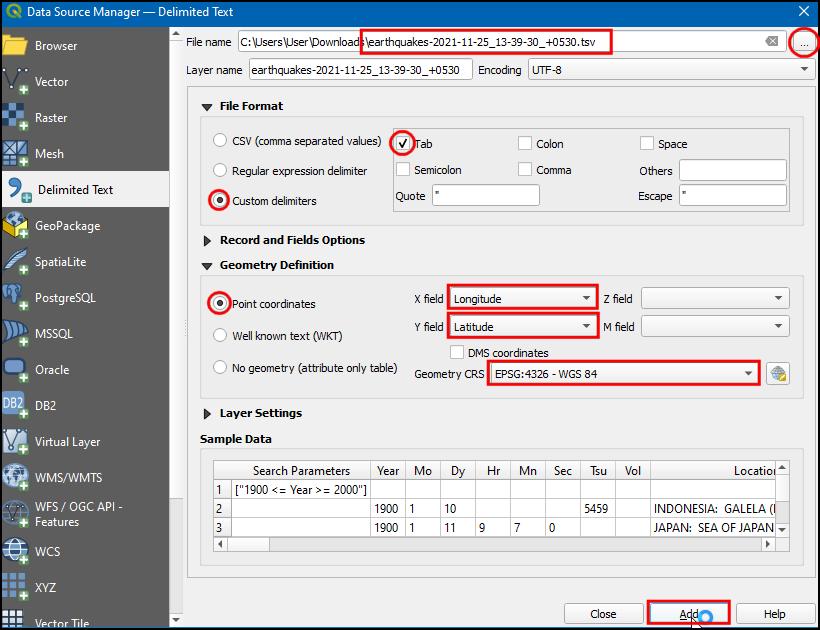
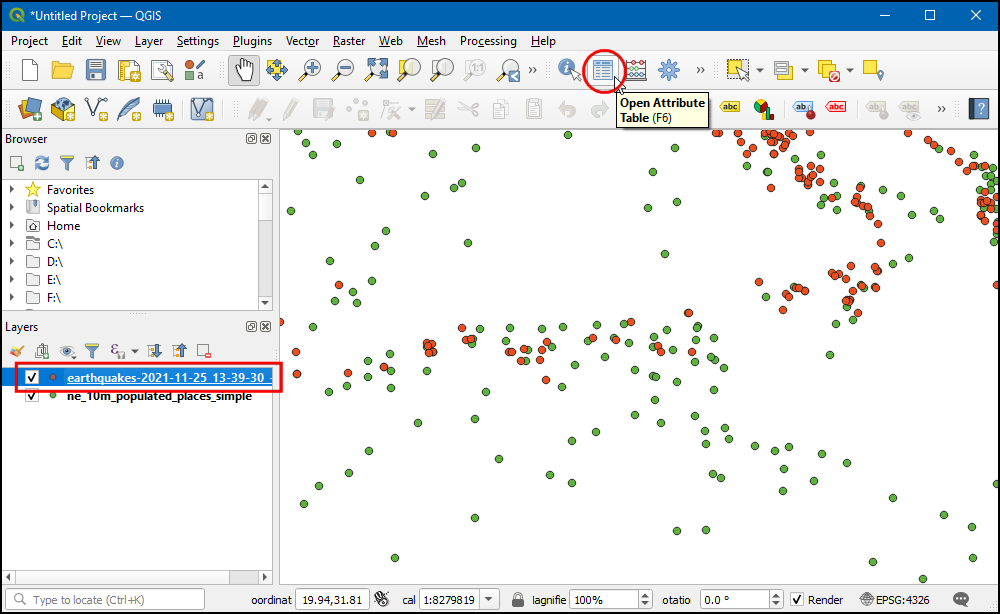
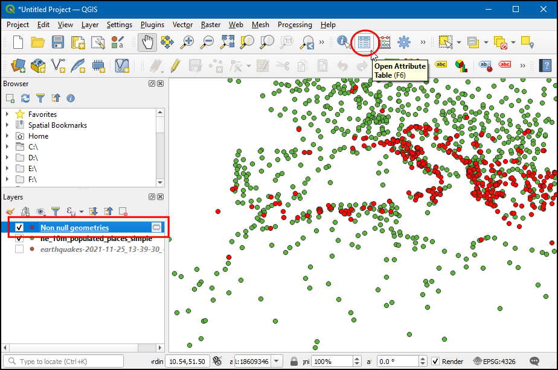

Análisis del Vecino Más Cercano (QGIS3)¶
Los SIG son muy útiles para analizar las relaciones espaciales entre los elementos. Uno de estos análisis es averiguar qué características están más cerca de una característica determinada. Hay varias maneras de hacer este análisis en QGIS. Se puede hacer una unión espacial utilizando la herramienta Unir Atributos por Más Cercano u obtener las distancias a todas las características de otra capa utilizando la herramienta Matriz de Distancia de la caja de herramientas de procesamiento. En este tutorial, exploraremos una herramienta llamada Distancia al centro más cercano de la Caja de Herramientas de Procesos que no sólo puede encontrar la distancia a la característica más cercana sino que la une con una línea para visualizar los resultados.
Vista general de la tarea¶
Dadas las localizaciones de todos los terremotos conocidos entre los años 1900 y 2000, averigua el lugar poblado más cercano para cada localización donde se produjo el terremoto.
Obtener los datos¶
Para este tutorial vamos a descargar un conjunto de datos de terremotos entre 1900-2000 del Centro Nacional de Datos Geofísicos de la NOAA, que produce un gran conjunto de datos de todos los terremotos importantes desde el año 2150 a.C. Visite el portal del NCEI de la NOAA e introduzca Min como
1900y Max como2000. Esto devolverá todos los incidentes sísmicos ocurridos y registrados por la NOAA entre esos años. Para otros resultados específicos, puede filtrar con diferentes parámetros. Haga clic en Búsqueda.

Como resultado, tenemos 2585 incidentes de terremotos. Haga clic en el icono Descargar TSV.

Natural Earth tiene un agradable conjunto de datos de Centros Poblados. Descargue el conjunto de datos simple (menos columnas).
Para su comodidad, puede descargar directamente una copia de ambos conjuntos de datos desde los enlaces abajo:
earthquakes_2021_11_25_14_31_59_+0530.tsv
ne_10m_populated_places_simple.zip
Fuentes de Datos: [NCEI] [NATURALEARTH]
Procedimiento¶
Ubique el archivo descargado
ne_10m_populated_places_simple.zipen el panel Navegador y expándalo. Arrastre el archivone_10m_populated_places_simple.shpa la pantalla.
Verá cargada una nueva capa
ne_10m_populated_places_simpleen el panel Capas. Esta capa contiene los puntos que representan centros poblados. Ahora cargaremos la capa de sismos. Esta capa viene como un archivo texto Valores Separados por Tabulaciones (TSV). Para cargar este archivo, clic el botón Abrir Administrador de Fuente de Datos en la Barra de Herramientas de Fuente de Datos. También puede usar el atajo de teclado Ctrl + L.

En el cuadro de diálogo Gestor de Fuentes de Datos, seleccione Texto delimitado.
Haga clic en el botón … junto a Nombre del archivo y busque el archivo descargado
terremotos-2021-11-25_13-39-30_+0530.tsv. Dependiendo del sistema operativo, es posible que no vea el archivo en el directorio descargado. En ese caso, cambie a Todos los archivos (*; .) en el cuadro de diálogo Elija un archivo de texto delimitado para abrirlo. Una vez abierto, seleccione Delimitadores personalizados en la sección Formato de archivo, y marqueTab. En la sección Definición de geometría, seleccione Coordenadas de punto. Por defecto, los valores de Campo X y Campo Y se rellenarán automáticamente con los campos apropiados de la entrada. En nuestro caso, sonLongitudyLatitud. Puede dejar la etiqueta SRC Geometría en el SRC por defectoEPSG:4326 - WGS 84. Si su archivo contiene coordenadas en un SRC diferente, puede seleccionar el SRC apropiado aquí. Haga clic en Añadir seguido de Cerrar.

Acérquese y explore ambos conjuntos de datos. Cada punto rojo representa la ubicación de una incidencia de terremoto, y cada punto verde representa la ubicación de un lugar poblado. Nuestro objetivo es averiguar el punto más cercano de la capa de lugares poblados para cada uno de los puntos de la capa de terremotos. Vamos a inspeccionar la tabla de atributos de la capa de terremotos. Seleccione la capa y haga clic en el icono Abrir tabla de atributos de la Barra de herramientas.

Hay
2586objetos espaciales, pero los datos contienen pocas entradas sin información de latitud o longitud. Tenemos que eliminar esto antes de seguir adelante. Cierre la Tabla de Atributos.

Vaya a . Haga doble clic para abrirla.

En el cuadro de diálogo Quitar Geometrías Nulas, seleccione
terremotos-2021-11-25_13-39-30_+0530como la Capa de entrada y marque la casilla También eliminar geometrías vacías. Haga clic en Ejecutar. Una vez finalizado el proceso, haga clic en Cerrar.

Se añadirá una nueva capa
Non null geometriesal panel Capas`. Para el análisis utilizaremos esta capa en lugar de la capa original. Desmarque la capaterremotos-2021-11-25_13-39-30_+0530en el panel Capas` para ocultarla. Seleccione la capaGeometrías no nulasy haga clic en el botón Abrir tabla de atributos de la barra de herramientas Atributos`.

Verá un recuento más bajo para el total de objetos espaciales, ya que se han eliminado todas las filas con valores vacíos de latitud y longitud. Cierre la tabla de atributos.

Ahora es el momento de realizar el análisis del vecino más cercano. Busque y localice la herramienta . Haga doble clic para lanzarla.

Nota
También podemos añadir una capa de puntos como salida, utilice la herramienta Distancia al centro más cercano (puntos) para ello.
En el cuadro de diálogo Distancia al núcleo más cercano (Línea al núcleo), seleccione
Non null geometriescomo capa de puntos de origen``. Seleccionene_10m_populated_places_simplecomo la capa Centros destino`. Seleccionenamecomo el atributo Nombre de la capa de cubos. La herramienta también calculará la distancia en línea recta entre el lugar poblado y el terremoto más cercano. EstablezcaKilómetroscomo Unidad de medida. Haga clic en...en Distancia entre núcleos de población` y haga clic en Guardar en archivo…` para guardar el archivo comoearthquakes_with_nearest_city.gpkg. Haga clic en Ejecutar. Una vez finalizado el proceso, haga clic en Cerrar.

De vuelta en la ventana principal de QGIS, verá una nueva capa de líneas llamada
earthquakes_with_nearest_citycargada en el panel Capas. Esta capa tiene características de línea que conectan cada punto de terremoto con el lugar poblado más cercano. Seleccione la capasismos_con_ciudad_más_cercanay haga clic en el icono Abrir ficha de atributos de la Barra de herramientas.

Desplácese a la derecha hasta las últimas columnas, y verá 2 nuevos atributos llamados HubName y HubDist añadidos a las características originales del terremoto. Este es el nombre de la distancia al vecino más cercano de la capa de lugares poblados.